Comment utiliser ce document • Ces notes développent chaque sujet abordé dans le PowerPoint du cours 2, avec des explications complètes pour une personne qui débute en biologie et en chimie. • Les questions posées dans le PPT (« qu'est-ce qu'une macromolécule ? », « qu'est-ce que la chaîne alimentaire ? », etc.) sont reprises et répondues en détail. • Les mots en gras sont des termes clés à connaître. • Chaque section se termine par un court résumé « à retenir ». |
|---|
Plan de la séance 2
Les niveaux hiérarchiques du vivant
Biochimie 101 : atomes, éléments et molécules
Les macromolécules du vivant
Les molécules organiques : autotrophes, hétérotrophes et la chaîne alimentaire
Les glucides
Les protéines
Les lipides
1. Les niveaux hiérarchiques du vivant
La biologie étudie le vivant à toutes les échelles possibles, du plus petit au plus grand. Pour s'y retrouver, on utilise une hiérarchie de l'organisation biologique : une série de niveaux emboîtés les uns dans les autres, où chaque niveau est composé des niveaux qui le précèdent. Cette hiérarchie est essentielle à comprendre dès le début du cours, car elle situe la matière de ce cours-ci (les molécules) par rapport à l'ensemble de la biologie.
Du plus petit au plus grand, on distingue généralement les niveaux suivants :
Les molécules : le niveau le plus fondamental abordé en biologie. Une molécule est une structure chimique formée d'au moins deux atomes assemblés (ex. : l'ADN, l'eau).
Les organites : des structures spécialisées à l'intérieur d'une cellule, formées de plusieurs molécules assemblées, qui remplissent une fonction précise (ex. : la mitochondrie, le noyau, le chloroplaste chez les végétaux).
Les cellules : l'unité structurale et fonctionnelle de base du vivant (voir cours 1), formée d'un ensemble d'organites qui travaillent ensemble.
Les tissus : un groupe de cellules similaires qui travaillent en coopération pour exécuter une fonction spécialisée (ex. : le tissu épithélial qui recouvre les surfaces du corps).
Les organes : une structure formée d'au moins deux tissus différents et ayant des fonctions spécifiques (ex. : le cœur, le cerveau, une feuille de plante).
Les systèmes (ou appareils) : un ensemble d'organes qui coopèrent pour accomplir une fonction commune plus large (ex. : le système nerveux, le système digestif).
Les organismes : un être vivant considéré individuellement — une plante, un animal, un champignon ou une bactérie pris isolément.
Les populations : l'ensemble des individus d'une même espèce qui vivent dans une même région à un moment donné (ex. : une population de renards dans une forêt).
Les communautés biologiques : l'ensemble des populations de différentes espèces qui peuplent un même écosystème (ex. : tous les animaux, plantes, champignons et microorganismes d'une forêt).
Les écosystèmes : l'ensemble des êtres vivants d'une région donnée, incluant aussi tout le non-vivant qui compose leur environnement (sol, eau, gaz atmosphériques, lumière).
La biosphère : l'ensemble de tous les écosystèmes de la Terre — le niveau le plus large, qui inclut toutes les régions de la planète où la vie est présente.
Un exemple concret aide à visualiser cette hiérarchie : une molécule de chlorophylle (molécule) se trouve à l'intérieur d'un chloroplaste (organite), lequel se trouve à l'intérieur d'une cellule végétale (cellule), qui fait partie du tissu photosynthétique d'une feuille (tissu), laquelle est un organe de la plante (organe), qui appartient à une plante entière (organisme), qui fait partie d'une population de cette espèce de plante (population), elle-même une composante de la communauté biologique d'une prairie (communauté), qui interagit avec le sol, l'eau et le climat de cette région pour former un écosystème (écosystème) — l'un des innombrables écosystèmes qui composent la biosphère terrestre.
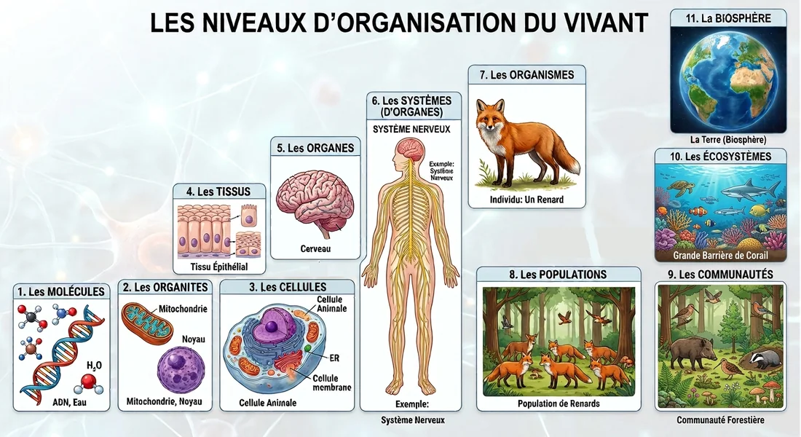
À retenir — hiérarchie du vivant • Molécules → organites → cellules → tissus → organes → systèmes → organismes → populations → communautés → écosystèmes → biosphère. • Chaque niveau est composé des niveaux qui le précèdent ; ce cours-ci se concentre sur le tout premier niveau : les molécules. |
|---|
2. Biochimie 101 : atomes, éléments et molécules
Avant de comprendre les grandes familles de molécules qui composent les êtres vivants (glucides, lipides, protéines), il faut maîtriser trois concepts fondamentaux de chimie : l'élément, l'atome et la molécule.
2.1 L'élément
Un élément chimique est une unité fondamentale qui constitue toute la matière de l'univers. Chaque élément possède des caractéristiques physiques et chimiques qui lui sont propres, et qui le distinguent de tous les autres éléments. Par exemple, un atome de l'élément oxygène est fondamentalement différent d'un atome de l'élément fer : ils n'ont ni la même masse, ni les mêmes propriétés chimiques.
Les 118 éléments chimiques connus sont organisés dans le tableau périodique des éléments, où chacun est représenté par un symbole chimique (ex. : O pour l'oxygène, C pour le carbone, Fe pour le fer, N pour l'azote) et caractérisé par son numéro atomique (le nombre de protons qu'il contient).
En biologie, seule une petite poignée d'éléments compose l'essentiel de la matière vivante : le carbone (C), l'hydrogène (H), l'oxygène (O), l'azote (N), et dans une moindre mesure le phosphore (P) et le soufre (S). Ces éléments seront omniprésents tout au long du cours.
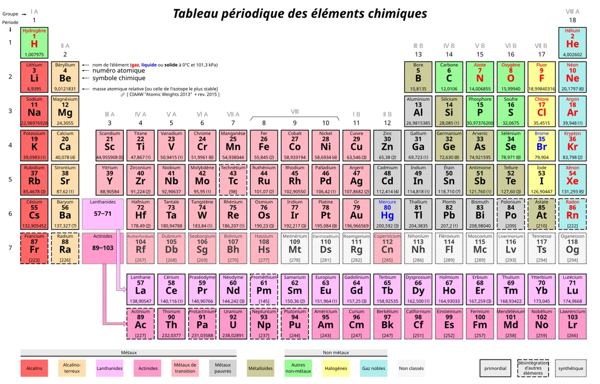
2.2 L'atome
Un atome est la plus petite particule d'un élément qui conserve encore les propriétés chimiques de cet élément. Il est indivisible par les méthodes chimiques traditionnelles (seules des réactions nucléaires, très différentes des réactions chimiques ordinaires, peuvent le fragmenter davantage).
Un atome est composé de trois types de particules :
Protons : particules chargées positivement, situées dans le noyau de l'atome. Leur nombre définit l'identité de l'élément (ex. : tout atome ayant 6 protons est un atome de carbone).
Neutrons : particules sans charge électrique, également situées dans le noyau.
Électrons : particules chargées négativement, qui gravitent autour du noyau. Ce sont les électrons qui participent aux liaisons chimiques entre atomes.
Le noyau (protons + neutrons) concentre presque toute la masse de l'atome, tandis que les électrons occupent l'espace autour de lui.
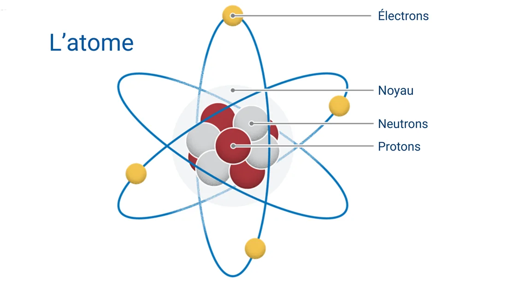
2.3 La molécule
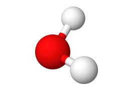
Une molécule est une association d'au moins deux atomes reliés ensemble par des liaisons chimiques. Ces atomes peuvent être identiques (comme dans le dioxygène, O₂, formé de deux atomes d'oxygène) ou différents (comme dans l'eau, H₂O, formée de deux atomes d'hydrogène et d'un atome d'oxygène).Deux exemples fondamentaux à connaître :
L'eau (H₂O) : aussi représentée H-O-H, c'est la molécule la plus abondante dans les organismes vivants. Elle est essentielle à presque toutes les réactions chimiques de la vie.
Le glucose : un sucre simple qui sert de source d'énergie de base pour la grande majorité des cellules vivantes ; il sera revu en détail dans la section sur les glucides.
On peut illustrer la composition élémentaire du corps humain à titre d'exemple concret : le corps humain est composé approximativement de 65 % d'oxygène, 18 % de carbone, 10 % d'hydrogène, 3 % d'azote, et environ 4 % d'autres éléments (calcium, phosphore, potassium, soufre, etc.). Ces proportions montrent bien que la matière vivante est essentiellement bâtie à partir d'une très petite poignée d'éléments, assemblés en molécules de plus en plus complexes.
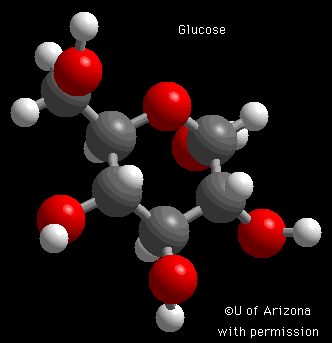
À retenir — biochimie de base • Élément : unité fondamentale de la matière (ex. : oxygène, carbone), représentée dans le tableau périodique. • Atome : plus petite particule d'un élément, composé de protons, neutrons et électrons ; indivisible chimiquement. • Molécule : association d'au moins 2 atomes reliés par des liaisons chimiques (ex. : H₂O, glucose). • Le vivant est composé principalement de carbone, hydrogène, oxygène et azote. |
|---|
3. Les macromolécules du vivant
Le préfixe « macro » signifie « gros », par opposition au préfixe « micro », qui signifie « petit » — un peu à contre-courant du terme « microbiologie » vu au cours 1, où « micro » désignait justement les organismes trop petits pour être vus à l'œil nu. Une macromolécule est donc, littéralement, une « grosse molécule » : une molécule de grande taille, formée par l'assemblage répété de nombreuses petites unités appelées monomères, reliées bout à bout pour former de longues chaînes appelées polymères.
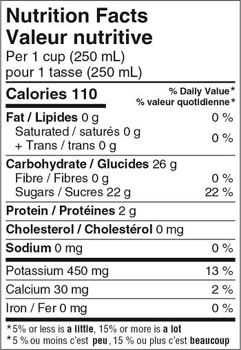
On peut se représenter une macromolécule comme un collier de perles : chaque perle individuelle est un monomère (une petite unité simple), et le collier complet, formé de centaines ou de milliers de perles reliées, est la macromolécule (le polymère).Les êtres vivants fabriquent principalement quatre grandes catégories de macromolécules, qui seront étudiées au fil du cours :
Les glucides (polymères de sucres simples)
Les lipides (qui ne sont pas toujours de vraies macromolécules au sens strict, mais sont regroupés ici pour leur rôle énergétique similaire)
Les protéines (polymères d'acides aminés)
Les acides nucléiques (polymères de nucléotides, comme l'ADN et l'ARN)
Un exemple très concret de ces macromolécules se trouve directement sur l'étiquette de valeur nutritive de presque tous les aliments emballés : les catégories « lipides », « glucides » et « protéines » qui y apparaissent correspondent exactement à ces grandes familles de macromolécules. Chacune y joue un rôle nutritionnel précis, qui sera détaillé dans les trois dernières sections de ce document.
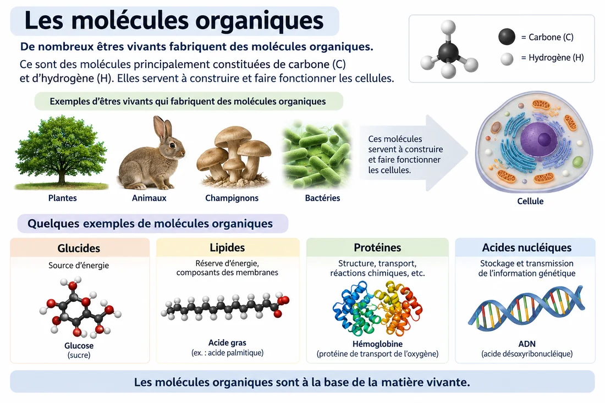
À retenir — macromolécules • Macro = gros ; une macromolécule est une grosse molécule formée de nombreux petits monomères reliés en chaîne (polymère). • Les 4 grandes familles de macromolécules du vivant : glucides, lipides, protéines, acides nucléiques. • On les retrouve directement sur les étiquettes de valeur nutritive des aliments. |
|---|
4. Les molécules organiques : autotrophes, hétérotrophes et la chaîne alimentaire
4.1 Qu'est-ce qu'une molécule organique ?
Une molécule organique est une molécule fabriquée par les êtres vivants. Elle est principalement constituée de carbone et d'hydrogène, et sert à construire et à faire fonctionner les cellules. Les glucides, les lipides, les protéines et les acides nucléiques mentionnés plus haut sont tous des exemples de molécules organiques.
Il est important de comprendre que ce ne sont pas seulement les plantes et les animaux qui fabriquent des molécules organiques : les champignons et les bactéries en fabriquent également. C'est d'ailleurs un point de jonction important avec la microbiologie alimentaire : les microorganismes présents dans les aliments possèdent leur propre machinerie pour fabriquer (et pour dégrader) des molécules organiques, ce qui explique en grande partie leur impact sur la composition et la qualité des aliments.
4.2 Autotrophes et hétérotrophes : d'où viennent les molécules organiques ?
Si tous les êtres vivants ont besoin de molécules organiques pour fonctionner, ils ne se les procurent pas tous de la même façon. On distingue deux grandes stratégies :
Les organismes autotrophes : fabriquent eux-mêmes leur propre matière organique, à partir de matière non organique (comme le dioxyde de carbone, l'eau et des minéraux), en utilisant une source d'énergie externe — le plus souvent la lumière du soleil (on parle alors de photosynthèse). Les plantes, les arbres et le phytoplancton (microalgues) sont des exemples typiques d'organismes autotrophes.
Les organismes hétérotrophes : sont incapables de fabriquer leur propre matière organique à partir de matière non organique ; ils doivent donc obtenir leur matière organique en consommant celle qui a déjà été produite par d'autres êtres vivants. Les animaux, les champignons et la grande majorité des bactéries sont des organismes hétérotrophes.
En bref : les autotrophes fabriquent la matière organique, alors que les hétérotrophes la consomment.
Cette distinction est essentielle en microbiologie alimentaire : la plupart des microorganismes qui nous intéressent dans ce cours (bactéries, levures, moisissures) sont hétérotrophes — ils se nourrissent des molécules organiques déjà présentes dans l'aliment (glucides, lipides, protéines), ce qui explique justement pourquoi ils peuvent s'y développer et le transformer.
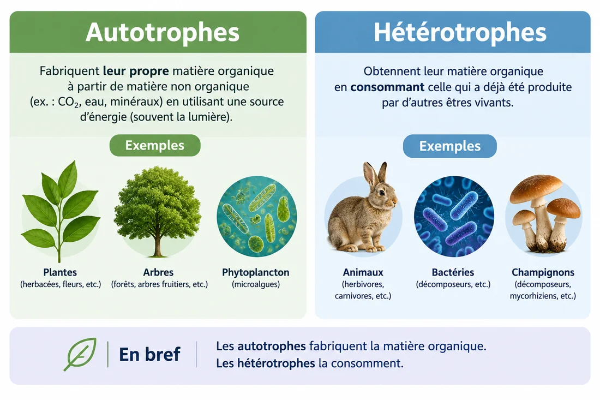
4.3 La chaîne alimentaire
La chaîne alimentaire est le mécanisme par lequel la matière organique — et l'énergie qu'elle contient — circule d'un être vivant à un autre, puisque « dans la nature, les êtres vivants se mangent les uns les autres ». Elle est généralement représentée sous forme d'une pyramide à plusieurs niveaux, appelés niveaux trophiques :
Les végétaux (producteurs) : à la base de la pyramide, ils servent de nourriture à tous les herbivores.
Les herbivores : se nourrissent uniquement de végétaux (ex. : lapin, escargot, chenille).
Les carnivores primaires : mangent des herbivores, mais aussi parfois des végétaux (ex. : hérisson, grenouille).
Les carnivores secondaires : mangent soit d'autres carnivores, soit des herbivores (ex. : renard, chat sauvage).
Les super-prédateurs : les plus gros des carnivores, qu'aucun autre animal ne mange (ex. : aigle royal, loup).
Un principe important de la chaîne alimentaire est la perte d'énergie à chaque niveau trophique : une grande partie de l'énergie disponible à un niveau se dissipe (notamment sous forme de chaleur, via le métabolisme) avant d'être transmise au niveau suivant. Une règle approximative bien connue en écologie est que seulement environ 10 % de l'énergie (et de la biomasse) d'un niveau se retrouve au niveau suivant. Par exemple, il faut environ 10 tonnes d'herbe pour nourrir 500 lapins de 2 kg, il faut ces 500 lapins pour nourrir 10 renards de 10 kg, et il faut ces 10 renards pour nourrir un seul rapace de 10 kg au sommet de la chaîne. C'est cette perte d'énergie progressive qui explique pourquoi il y a toujours beaucoup moins de prédateurs que de proies dans un écosystème.
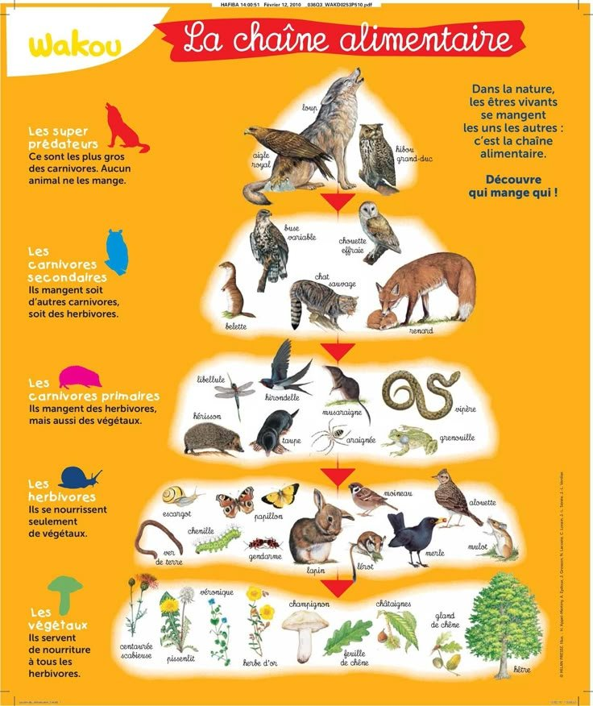
4.4 D'où vient la matière organique, au départ ? La photosynthèse
Le PPT posait une question fondamentale : si tous les êtres vivants se nourrissent les uns des autres pour obtenir leurs molécules organiques de base, d'où vient cette matière organique au tout départ ? La réponse se trouve chez les organismes autotrophes, et plus précisément grâce au processus de la photosynthèse.
La photosynthèse est le processus par lequel les plantes, certaines bactéries et le phytoplancton captent l'énergie lumineuse du soleil pour transformer des molécules simples et non organiques — le dioxyde de carbone (CO₂) et l'eau (H₂O) — en molécules organiques (des glucides, comme le glucose), tout en libérant de l'oxygène (O₂) comme sous-produit. C'est donc la photosynthèse qui constitue, à la base de la chaîne alimentaire, la toute première source de matière organique sur Terre — c'est elle qui alimente, directement ou indirectement, la quasi-totalité des écosystèmes de la planète.
À retenir — molécules organiques et chaîne alimentaire • Molécule organique = molécule fabriquée par les êtres vivants, riche en carbone et en hydrogène. • Autotrophes : fabriquent leur matière organique (ex. : plantes, via la photosynthèse). Hétérotrophes : la consomment (ex. : animaux, champignons, la plupart des bactéries). • La chaîne alimentaire fait circuler la matière organique des producteurs vers les consommateurs, avec une perte d'énergie importante (~90 %) à chaque niveau trophique. • La photosynthèse est la source originelle de la matière organique sur Terre. |
|---|
5. Les glucides
Les glucides (aussi appelés hydrates de carbone ou « carbohydrates ») sont des molécules organiques composées uniquement de carbone (C), d'hydrogène (H) et d'oxygène (O) — d'où leur nom formé souvent du suffixe « -ose » (glucose, fructose, lactose, etc.).
5.1 Rôle des glucides
Les glucides constituent la source d'énergie principale de la plupart des cellules vivantes : ils sont convertis en glucose, la molécule que les cellules utilisent directement pour produire de l'énergie utilisable. Sur le plan de leur origine, les glucides sont majoritairement d'origine végétale (fruits, légumes, céréales), à deux exceptions notables près : le lactose (sucre du lait, d'origine animale) et le glycogène (réserve de glucides des animaux, incluant l'humain).
5.2 Les trois catégories de glucides, selon leur taille
Les glucides se classent en trois catégories selon le nombre d'unités simples (monomères) qui les composent :
Les monosaccharides (1 monomère)
Ce sont les plus petites unités de glucides, celles qui ne peuvent pas être décomposées davantage par simple hydrolyse. Elles sont directement utilisables par les cellules.
| Nom | Où le retrouve-t-on ? | Fonction principale |
|---|---|---|
| Glucose | Fruits, jus, miel, sang | Source d'énergie principale des cellules |
| Fructose | Fruits, miel, certains légumes | Source d'énergie |
| Galactose | Lait et produits laitiers (sous forme de lactose) | Source d'énergie ; composant du lactose |
| Ribose | Cellules de tous les êtres vivants | Constituant de l'ARN, de l'ATP et de certains nucléotides |
| Désoxyribose | Cellules de tous les êtres vivants | Constituant de l'ADN |
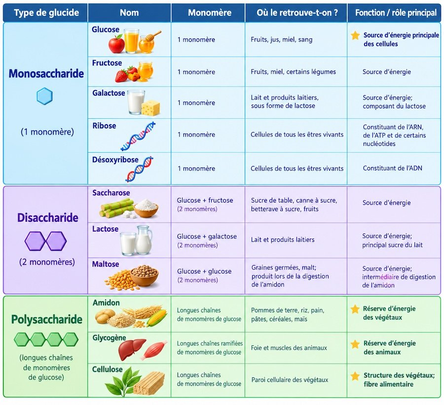
Les disaccharides (2 monomères)
Formés par l'union de deux monosaccharides.
| Nom | Composition | Où le retrouve-t-on ? |
|---|---|---|
| Saccharose | Glucose + fructose | Sucre de table, canne à sucre, betterave à sucre, fruits |
| Lactose | Glucose + galactose | Lait et produits laitiers |
| Maltose | Glucose + glucose | Graines germées, malt ; produit lors de la digestion de l'amidon |
Les polysaccharides (longues chaînes de monomères de glucose)
| Nom | Où le retrouve-t-on ? | Fonction principale |
|---|---|---|
| Amidon | Pommes de terre, riz, pain, pâtes, céréales, maïs | Réserve d'énergie des végétaux |
| Glycogène | Foie et muscles des animaux | Réserve d'énergie des animaux |
| Cellulose | Paroi cellulaire des végétaux | Structure des végétaux ; fibre alimentaire |
La cellulose mérite une mention particulière en contexte alimentaire : bien qu'elle soit un polysaccharide formé de glucose, le corps humain n'a pas les enzymes nécessaires pour la digérer — c'est pourquoi elle traverse le système digestif sans être absorbée et constitue ce qu'on appelle une fibre alimentaire. Ce sont plutôt certaines bactéries du microbiote intestinal (voir cours 1) qui peuvent la fermenter partiellement.
À retenir — glucides • Glucides = C, H, O ; source d'énergie principale des cellules ; majoritairement d'origine végétale (sauf lactose et glycogène). • Monosaccharides (1 monomère) : glucose, fructose, galactose, ribose, désoxyribose. • Disaccharides (2 monomères) : saccharose, lactose, maltose. • Polysaccharides (longues chaînes) : amidon (réserve végétale), glycogène (réserve animale), cellulose (structure végétale, fibre). |
|---|
6. Les protéines
Les protéines sont des molécules organiques composées de carbone (C), d'hydrogène (H), d'oxygène (O), d'azote (N) et parfois de soufre (S). Ce sont des macromolécules formées par l'assemblage de monomères appelés acides aminés, reliés en longues chaînes appelées chaînes peptidiques. Il existe 20 acides aminés différents qui peuvent se combiner dans un ordre précis pour former une protéine, un peu comme les 26 lettres de l'alphabet peuvent se combiner pour former une infinité de mots différents.
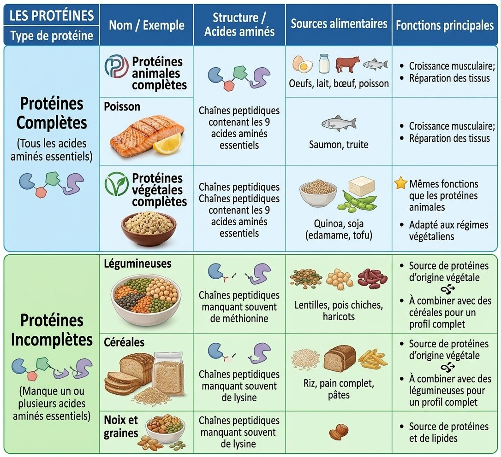
6.1 Les acides aminés essentiels
Parmi les 20 acides aminés qui composent les protéines, 9 sont dits essentiels chez l'humain adulte : le corps humain est incapable de les fabriquer lui-même, et ils doivent donc obligatoirement provenir de l'alimentation. C'est ce critère — la présence ou l'absence de tous les acides aminés essentiels — qui permet de distinguer les protéines complètes des protéines incomplètes.
6.2 Protéines complètes
Une protéine complète contient les 9 acides aminés essentiels en quantité suffisante. On en retrouve dans :
| Type | Exemples |
|---|---|
| Protéines animales complètes | Œufs, lait, bœuf, poisson (saumon, truite) |
| Protéines végétales complètes | Quinoa, soja (edamame, tofu) |
Les fonctions principales des protéines complètes incluent la croissance musculaire et la réparation des tissus ; les protéines végétales complètes remplissent exactement les mêmes fonctions que les protéines animales et conviennent bien aux régimes végétaliens.
6.3 Protéines incomplètes
Une protéine incomplète manque d'un ou de plusieurs acides aminés essentiels. C'est le cas de la grande majorité des sources de protéines végétales prises individuellement :
Légumineuses (lentilles, pois chiches, haricots) : manquent souvent de méthionine
Céréales (riz, pain complet, pâtes) : manquent souvent de lysine
Noix et graines : manquent souvent de lysine
L'astuce nutritionnelle classique consiste à combiner deux sources de protéines incomplètes qui se complètent mutuellement, afin d'obtenir malgré tout les 9 acides aminés essentiels dans le même repas — c'est le principe derrière des combinaisons traditionnelles comme le riz et les haricots, ou le houmous (pois chiches) et le pain pita (céréale).
À retenir — protéines • Protéines = C, H, O, N (parfois S) ; polymères d'acides aminés (20 différents, dont 9 essentiels chez l'humain). • Protéines complètes : contiennent les 9 acides aminés essentiels (viandes, produits laitiers, œufs, poisson ; mais aussi quinoa et soja côté végétal). • Protéines incomplètes : manquent d'un ou plusieurs acides aminés essentiels (légumineuses, céréales, noix) — à combiner entre elles pour un profil complet (ex. : riz + haricots). |
|---|
7. Les lipides
Les lipides regroupent une famille de molécules organiques composées principalement de carbone (C) et d'hydrogène (H), toujours accompagnés d'un peu d'oxygène (O), et parfois d'azote (N) et de phosphore (P) selon le type de lipide. Contrairement aux glucides et aux protéines, les lipides ne sont généralement pas de vraies macromolécules formées de longues chaînes répétitives — ce sont plutôt des molécules de structure variée, unies par leur caractère commun : elles sont insolubles dans l'eau (hydrophobes).
7.1 Rôles des lipides
Source d'énergie très concentrée (plus dense en énergie que les glucides ou les protéines)
Constituant essentiel des membranes cellulaires (chaque cellule est délimitée par une membrane composée en grande partie de lipides)
Réserve d'énergie à long terme, stockée dans le tissu adipeux
7.2 Structure de base : triglycérides et acides gras
La forme la plus commune de lipide alimentaire est le triglycéride, une molécule composée d'un glycérol (une petite molécule qui sert de « colonne vertébrale ») auquel sont attachés trois acides gras (de longues chaînes d'atomes de carbone et d'hydrogène). C'est la structure précise de ces acides gras — en particulier, la présence ou l'absence de doubles liaisons entre leurs atomes de carbone — qui détermine si un lipide est dit saturé ou insaturé.
7.3 Lipides saturés
Un acide gras saturé ne contient aucune double liaison entre ses atomes de carbone : sa chaîne est donc « saturée » en atomes d'hydrogène. Cette structure fait que les lipides saturés sont généralement solides à température ambiante.
| Origine | Exemples | Sources alimentaires |
|---|---|---|
| Origine animale | Chaînes d'acides gras saturés, sans doubles liaisons | Beurre, crème, fromage, viande grasse |
| Quelques huiles végétales | Chaînes d'acides gras saturés (cas particulier) | Huile de coco, huile de palme |
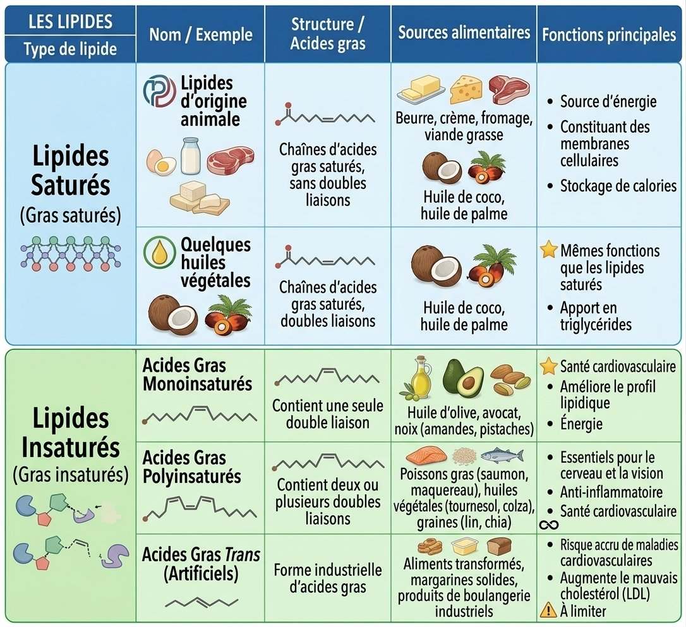
7.4 Lipides insaturés
Un acide gras insaturé contient au moins une double liaison entre deux de ses atomes de carbone, ce qui crée un « coude » dans la chaîne. Cette structure fait que les lipides insaturés sont généralement liquides à température ambiante (ex. : les huiles végétales).
| Type | Structure | Sources alimentaires | Effet sur la santé |
|---|---|---|---|
| Acides gras monoinsaturés | Une seule double liaison | Huile d'olive, avocat, noix (amandes, pistaches) | Favorables à la santé cardiovasculaire |
| Acides gras polyinsaturés | Deux ou plusieurs doubles liaisons | Poissons gras (saumon, maquereau), huiles végétales (tournesol, colza), graines (lin, chia) | Essentiels pour le cerveau et la vision ; anti-inflammatoires |
| Acides gras trans (artificiels) | Forme industrielle d'acides gras insaturés, modifiée chimiquement | Aliments transformés, margarines solides, produits de boulangerie industriels | Risque accru de maladies cardiovasculaires ; à limiter |
Parmi les acides gras polyinsaturés, deux familles sont dites essentielles (comme certains acides aminés) car le corps humain ne peut pas les fabriquer lui-même : les oméga-3 (présents notamment dans les poissons gras) et les oméga-6 (présents notamment dans plusieurs huiles végétales).
7.5 Le cholestérol
Le cholestérol est un autre type de lipide, de structure différente de celle des triglycérides. Il provient de deux sources : environ 15 % proviennent directement de l'alimentation (aliments d'origine animale), tandis qu'environ 85 % sont produits par le corps lui-même, plus précisément par les hépatocytes (cellules du foie). Le cholestérol joue un rôle structural important, notamment dans les membranes cellulaires.
7.6 Vue d’ensemble
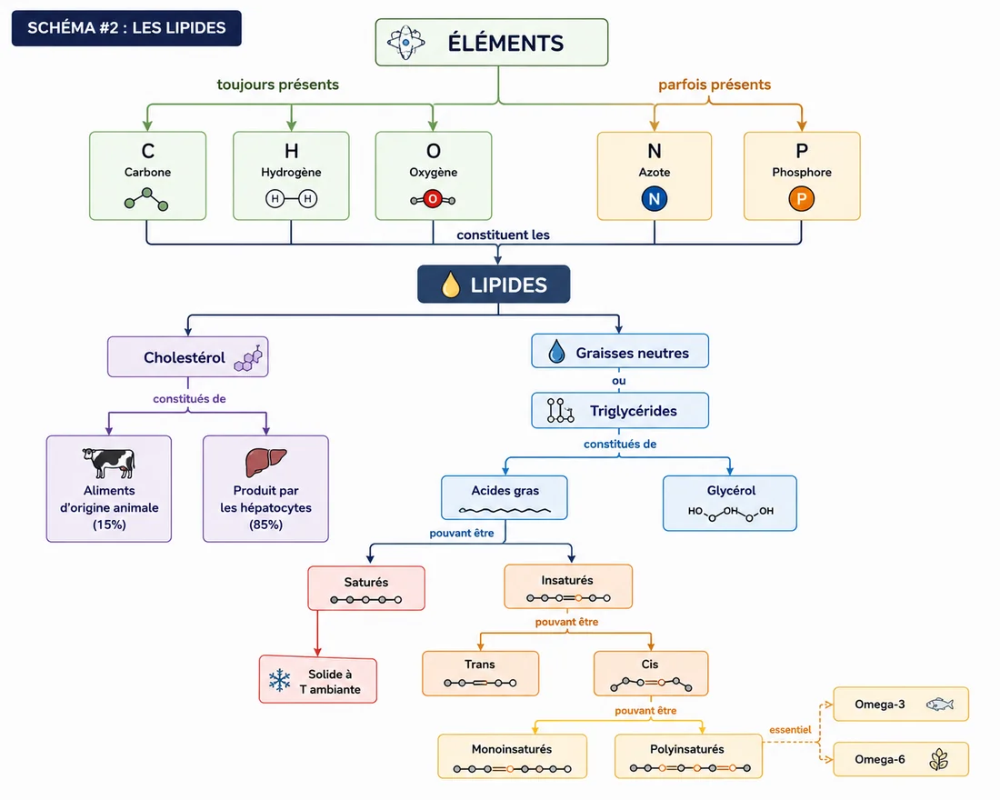
À retenir — lipides • Lipides = principalement C et H (+ un peu O, parfois N et P) ; insolubles dans l'eau ; source d'énergie concentrée et composants des membranes cellulaires. • Triglycéride = glycérol + 3 acides gras. • Saturés (pas de double liaison, solides à température ambiante, souvent d'origine animale) vs insaturés (au moins une double liaison, liquides à température ambiante, souvent d'origine végétale ou du poisson). • Acides gras trans (industriels) : à limiter pour la santé cardiovasculaire. • Oméga-3 et oméga-6 : acides gras polyinsaturés essentiels, devant provenir de l'alimentation. • Cholestérol : ~15 % alimentaire, ~85 % produit par le foie. |
|---|
Résumé général de la séance 2
Cette deuxième séance a permis de descendre d'un niveau dans la hiérarchie du vivant amorcée au cours 1, pour explorer le tout premier échelon : les molécules qui composent tous les êtres vivants.
Le vivant s'organise en une hiérarchie de niveaux emboîtés, des molécules jusqu'à la biosphère.
La matière est faite d'éléments (unités fondamentales, ex. : carbone, oxygène), dont les atomes s'assemblent par liaisons chimiques pour former des molécules (ex. : eau, glucose).
Une macromolécule est une grosse molécule formée de nombreux petits monomères assemblés en polymère ; les 4 grandes familles du vivant sont les glucides, les lipides, les protéines et les acides nucléiques.
Les molécules organiques sont fabriquées par les êtres vivants ; les autotrophes (comme les plantes, via la photosynthèse) les fabriquent à partir de matière non organique, alors que les hétérotrophes (comme les animaux et la plupart des bactéries) doivent les consommer.
La chaîne alimentaire fait circuler cette matière organique entre organismes, avec une perte d'énergie importante à chaque niveau trophique.
Les glucides (source d'énergie principale, majoritairement végétaux) se déclinent en monosaccharides, disaccharides et polysaccharides.
Les protéines (croissance et réparation des tissus) sont faites d'acides aminés, dont 9 sont essentiels ; on distingue les protéines complètes des incomplètes.
Les lipides (énergie concentrée, membranes cellulaires) se déclinent en saturés, insaturés (mono/polyinsaturés, incluant les oméga essentiels) et trans (à limiter).
Pour la suite du cours • Le cours 3 abordera le modèle cellulaire en détail (cellule eucaryote vs procaryote), l'écologie microbienne, ainsi que les facteurs qui influencent la croissance des microorganismes dans les aliments (facteurs intrinsèques et extrinsèques). |
|---|